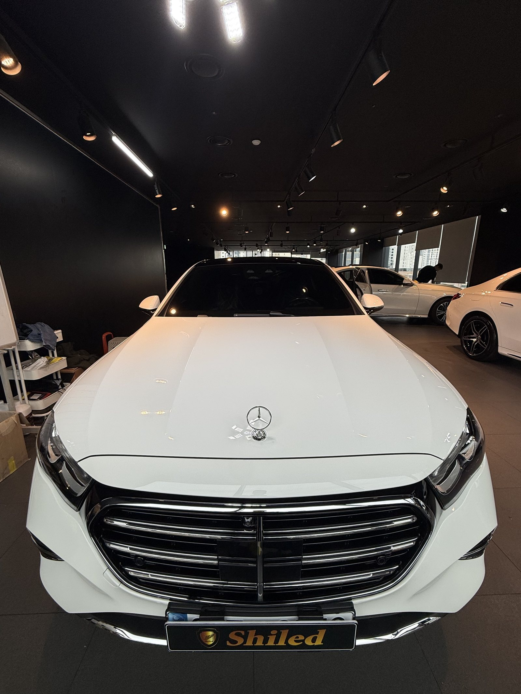
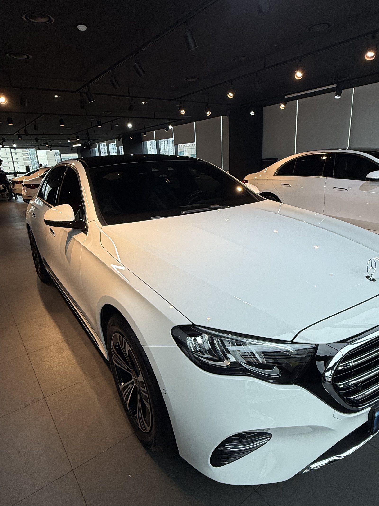
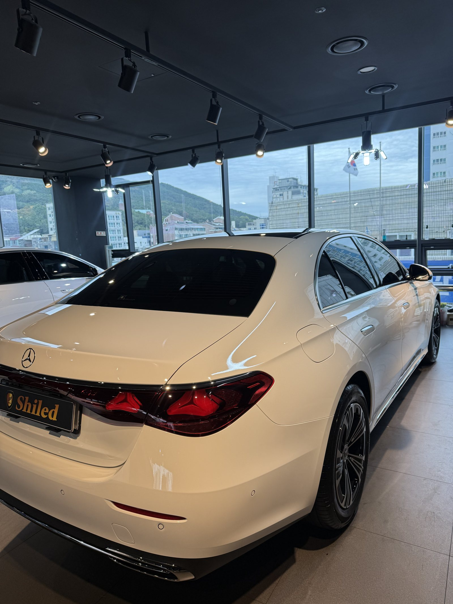
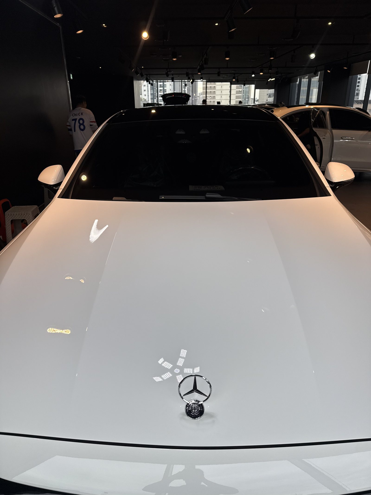
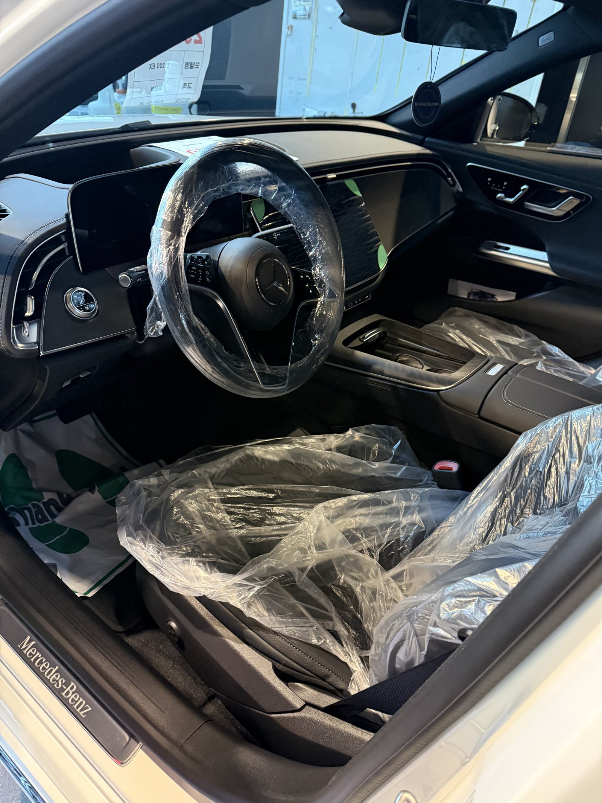
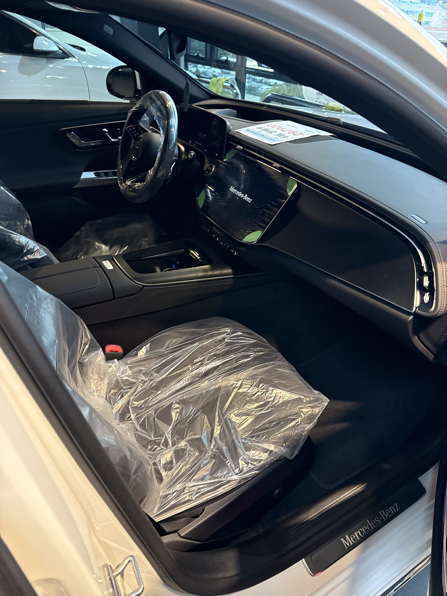
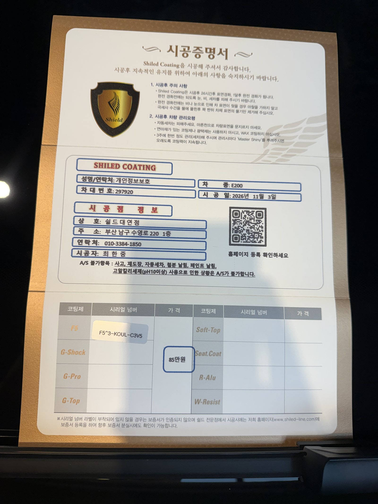

벤츠 E200 익스클루시브, 백색 신차입니다.
보닛 위에 삼각별 엠블럼이 서 있는 사양입니다.
출고 전 F5로 진행한 부산 유리막코팅 기록입니다.

엠블럼이 서 있는 차는 어디를 더 보나요?
엠블럼 밑동입니다.
보닛 위에 세워진 삼각별은 보닛과 맞닿는 밑동이 좁습니다.
그 틈에 코팅액이 고이면 굳은 뒤 흰 테처럼 남습니다.
흰 차라 더 늦게 보입니다. 굳고 나면 그때 손이 두 배로 듭니다.
그래서 보닛은 도포 직후 엠블럼 밑동부터 닦아 냈습니다.



기술자의 팁
익스클루시브는 가로 크롬 그릴과 창틀 크롬이 많습니다. 세차하실 때 크롬에 물자국이 그대로 마르면 흰 테가 남으니, 마지막에 크롬부터 닦아 내시는 편이 낫습니다.
백색 E200 익스클루시브에 F5를 올린 이유
F5는 색감의 깊이와 글로시함에 특화된 코팅입니다.
흰색에 올리면 맑은 흰빛이 오래 유지됩니다.
실내는 대시보드부터 시트까지 전부 검정으로 맞춘 구성입니다.
핸들 비닐도 떼지 않은 출고 직전 상태라, 외부 도장면만 작업했습니다.
코팅제는 대표가 직접 개발·제조한 제품입니다.
이번 부산 유리막코팅은 F5 싱글로 진행했습니다.


시공증명서도 함께 드립니다
모든 시공 차량에 시공증명서를 드립니다.
차종·시공일·코팅제 시리얼 번호가 적혀 있고, 홈페이지에 등록해 보증을 받으실 수 있습니다.

차종·시공일·코팅제 시리얼이 기재된 시공증명서
자주 묻는 질문
Q. 보닛 위 삼각별 엠블럼 주변은 어떻게 작업하나요?
A. 엠블럼이 서 있는 차는 밑동에 코팅액이 고입니다. 도포 후 밑동을 따로 닦아 내고 굳기 전에 한 번 더 확인합니다.
Q. 익스클루시브와 AMG 라인은 작업이 다른가요?
A. 도장면 작업은 같습니다. 다만 익스클루시브는 크롬 파츠가 많아 경계선을 닦는 손이 더 들어갑니다.
Q. 검정 실내는 코팅과 관계가 있나요?
A. 유리막코팅은 외부 도장면 작업이라 실내와는 무관합니다. 실내는 별도로 시트코팅을 선택하실 수 있습니다.
Q. 백색 차량도 F5가 맞나요?
A. F5는 색감 특화 코팅이라 흰색의 맑은 톤을 살리는 데 잘 맞습니다. 발수를 더 원하시면 G-TOP도 상담해 드립니다.
Q. 쉴드광택 위치와 예약은 어떻게 하나요?
A. 부산 남구 유엔로220 1F 쉴드광택입니다. 예약·상담은 010-3384-1850, 대표 최한중이 직접 상담하고 책임 시공합니다.
새 차일수록 시작점이 다릅니다. 가장 깨끗할 때 입혀두십시오.
제품을 직접 만드는 사람이 직접 시공합니다.
부산에서 신차 유리막코팅을 고민 중이시면 편하게 연락 주십시오.
어떤 차를 타냐보다 어떻게 타냐가 중요합니다~!
시공 중에는 전화를 받지 못할 때가 많습니다.
카카오톡으로 차종과 원하시는 시공을 남겨주시면 확인 후 답변드립니다.
쉴드광택 · 부산 남구 유엔로220 1F · 대표 최한중